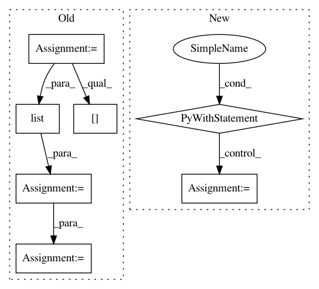

aab3902d4a7d55f5a86058854adc36b8a12c873f,catalyst/dl/callbacks/base.py,OptimizerCallback,on_batch_end,#OptimizerCallback#Any#,202
Before Change
else:
model = state.model
model.zero_grad()
optimizer = state.get_key(
key="optimizer", inner_key=self.optimizer_key
)
loss = state.get_key(key="loss", inner_key=self.optimizer_key)
scaled_loss = self.fp16_grad_scale * loss.float()
scaled_loss.backward()
master_params = list(optimizer.param_groups[0]["params"])
model_params = list(
filter(lambda p: p.requires_grad, model.parameters())
)
copy_grads(source=model_params, target=master_params)
for param in master_params:
param.grad.data.mul_(1. / self.fp16_grad_scale)
self.grad_step(
optimizer=optimizer,
optimizer_wd=self._optimizer_wd,
grad_clip_fn=self.grad_clip_fn
After Change
// or expose another c"tor argument.
if hasattr(optimizer, "_amp_stash"):
from apex import amp
with amp.scale_loss(loss, optimizer) as scaled_loss:
scaled_loss.backward()
else:
loss.backward()
if (self._accumulation_counter + 1) % self.accumulation_steps == 0:
In pattern: SUPERPATTERN
Frequency: 4
Non-data size: 7
Instances
Project Name: Scitator/catalyst
Commit Name: aab3902d4a7d55f5a86058854adc36b8a12c873f
Time: 2019-05-20
Author: ekhvedchenya@gmail.com
File Name: catalyst/dl/callbacks/base.py
Class Name: OptimizerCallback
Method Name: on_batch_end
Project Name: YerevaNN/mimic3-benchmarks
Commit Name: 7567cc646d258e40dde9790a28a9b264ccd494fb
Time: 2017-08-27
Author: harhro@gmail.com
File Name: mimic3models/split_train_val.py
Class Name:
Method Name:
Project Name: YerevaNN/mimic3-benchmarks
Commit Name: 5d353701dd56a1fc8abc15e4082e33b7bed2a241
Time: 2017-08-09
Author: harhro@gmail.com
File Name: mimic3models/split_train_val.py
Class Name:
Method Name: